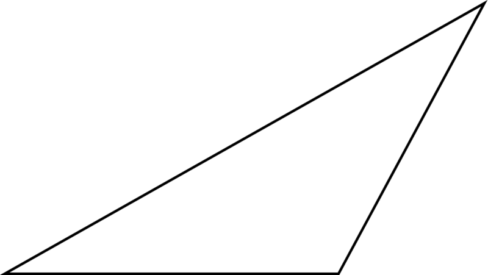

A triangle consists of 3 degrees
An acute angle is less than 90 degrees
A right angle is exactly 90 degrees
An obtuse angle is greater than 90 degrees (but less than 180 degrees)
Enter 2 of the 3 degrees and I will classify the missing angle for you as either "acute", "right", or "obtuse" based on the degrees provided
